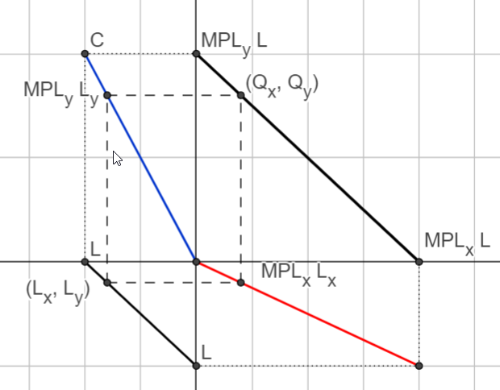

Micro Theory
Trade
Intro Microeconomics
This Book
Contents
Trade Geogebra Interactives
Ricardian Model
Linear Production Possibility Frontier
Four Quadrant Ricadian PPF
Ricadian Gains to Trade
The Standard Trade Model
Small Economy Gains to Trade
Specific Factor Model (2 panel)
Hecksher-Ohlin-Samuelson
Rybczynski and HOS Theorems
International Migration
The diagrams below are immediately interactive
Geogebra Source
previous
Edgeworth Box
next
The Ricardian Trade Model